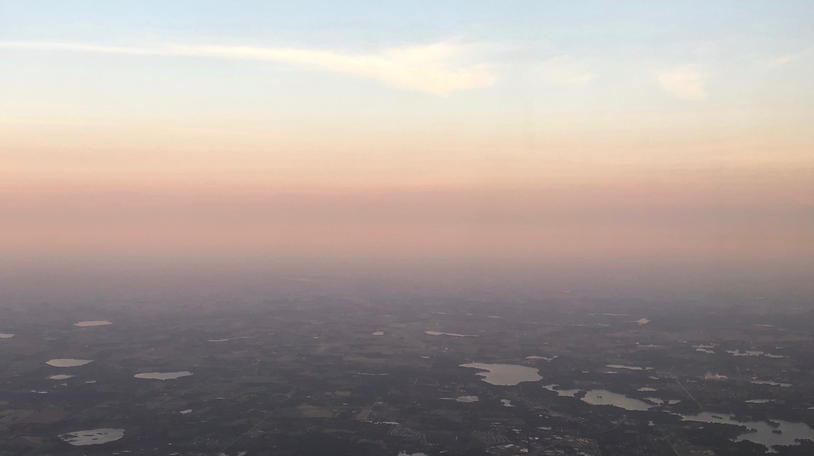

Week 10
 Flying home, plane over Minneapolis
I am posting this way after my actual week 10 of research, but with memories and insights that have lasted! Week 10 went by the fastest of them all– I sent in my project for evaluation and a paper for CHI with my name on it. I spent this last week writing up my project report, saying my goodbyes, and presenting my experience at our last HCI lab meeting.
I’ve never missed home more in my life, but I’ve also seen so much value in my 10 weeks in Iowa City. I’ve learned so much from Kyle, not only about accessibility research, but also from her leadership, kindness, and wisdom. Back in Washington, my perspective has changed with the awareness of accessibility and that is something I’m proud to take away.
you can view my individual project report here and my presentation slides here.
For website display purposes for the CRA-W organization, clicking here will download the tar file that contains this website.
Thank you Kyle Rector, the University of Iowa, and the Computing Research Association for this experience!